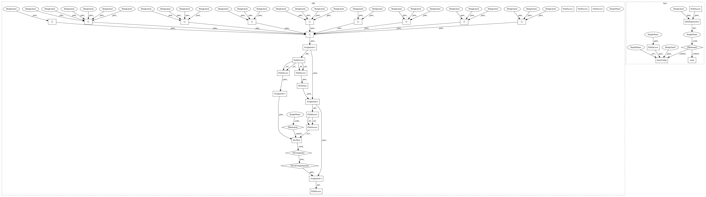

2bb8e1dfeadfef943c888f7e4e735fd161535475,gensim/test/test_tfidfmodel.py,,,#,23
Before Change
// set up vars used in testing ("Deerwester" from the web tutorial)
texts = [
["human", "interface", "computer"],
["survey", "user", "computer", "system", "response", "time"],
["eps", "user", "interface", "system"],
["system", "human", "system", "eps"],
["user", "response", "time"],
["trees"],
["graph", "trees"],
["graph", "minors", "trees"],
["graph", "minors", "survey"]
]
dictionary = Dictionary(texts)
corpus = [dictionary.doc2bow(text) for text in texts]
def testfile():
// temporary data will be stored to this file
After Change
// endclass TestTfidfModel
if __name__ == "__main__":
logging.basicConfig(format="%(asctime)s : %(levelname)s : %(message)s", level=logging.DEBUG)
unittest.main()
In pattern: SUPERPATTERN
Frequency: 4
Non-data size: 34
Instances
Project Name: RaRe-Technologies/gensim
Commit Name: 2bb8e1dfeadfef943c888f7e4e735fd161535475
Time: 2017-11-06
Author: horpto@users.noreply.github.com
File Name: gensim/test/test_tfidfmodel.py
Class Name:
Method Name:
Project Name: RaRe-Technologies/gensim
Commit Name: 2bb8e1dfeadfef943c888f7e4e735fd161535475
Time: 2017-11-06
Author: horpto@users.noreply.github.com
File Name: gensim/test/test_similarity_metrics.py
Class Name:
Method Name:
Project Name: RaRe-Technologies/gensim
Commit Name: 2bb8e1dfeadfef943c888f7e4e735fd161535475
Time: 2017-11-06
Author: horpto@users.noreply.github.com
File Name: gensim/test/test_logentropy_model.py
Class Name:
Method Name:
Project Name: RaRe-Technologies/gensim
Commit Name: 2bb8e1dfeadfef943c888f7e4e735fd161535475
Time: 2017-11-06
Author: horpto@users.noreply.github.com
File Name: gensim/test/test_rpmodel.py
Class Name:
Method Name:
Project Name: RaRe-Technologies/gensim
Commit Name: 2bb8e1dfeadfef943c888f7e4e735fd161535475
Time: 2017-11-06
Author: horpto@users.noreply.github.com
File Name: gensim/test/test_tfidfmodel.py
Class Name:
Method Name: